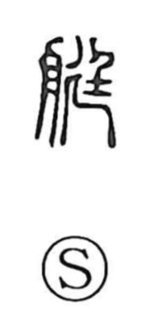

艇

Uncategorized
Kun: | On: tei
small boat ・ small craft
Explanation
A phono-semantic character formed from 舟, “boat,” with 廷 as the phonetic element marking the on-reading tei. The sense inherent in 廷—straight or upright—suggests a long, narrow hull, guiding the image toward a slender boat. Later glosses, such as those in the Shuowen’s New Appendices, define it as a small boat, like a dugout or skiff for one or two people. Accordingly, the character came to designate small-sized boats and light craft, as reflected in compounds like 舟艇 (boats, craft), 艇庫 (boathouse), and 競艇 (motorboat racing).